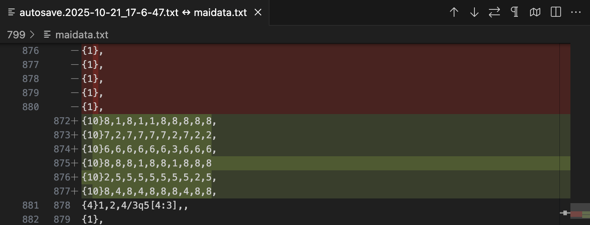
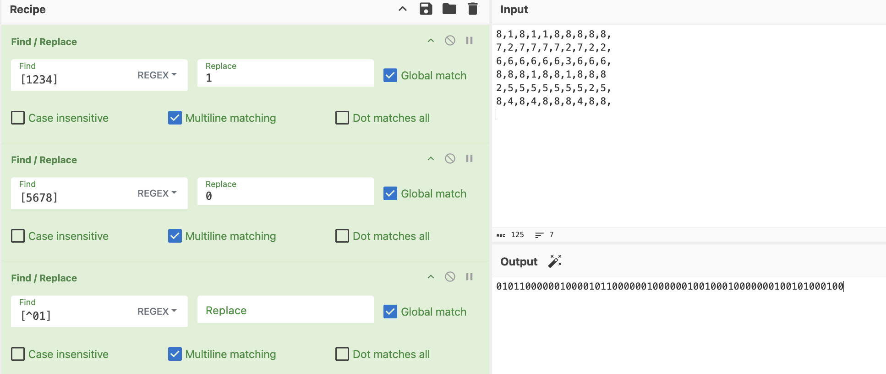

Someone showed me a "map" and he claimed to have found a hidden signal in it. Can you decode it?
Turn the answer to uppercase and wrap it in osu{FLAG} format.
Note: A 0 is missing in the string before decoding the flag. It is in the last third of the flag and you could notice it when you get to the part. It should be easily guessable where to add the 0. Sorry for the confusion.
Downloads
rhythm_hidden-signal.tar.gz
First, unzip the archive file.
-
The folder contains
maidata.txt, a Maimai chart created using Neskol's MaichartConverter. - The hidden folder
.autosave(visible in VSCode) contains 5 autosave files for maidata.
Next, compare the files.
- Using a file compare tool (ex. VSCode's Compare Files), we'll find 6 new lines that were added. 
- Each line contains 10 numbers of only two kinds.
- Convert each line into a binary sequence. (1234 -> 1, 5678 -> 0) 
- Put the sequence into CyberChef.
- In Baconian cipher, the binary sequence decodes into the hidden signal.

MAIMAICIRCLE
Consequently, we captured the flag for rhythm/hidden-signal.
Flag: osu{MAIMAICIRCLE}